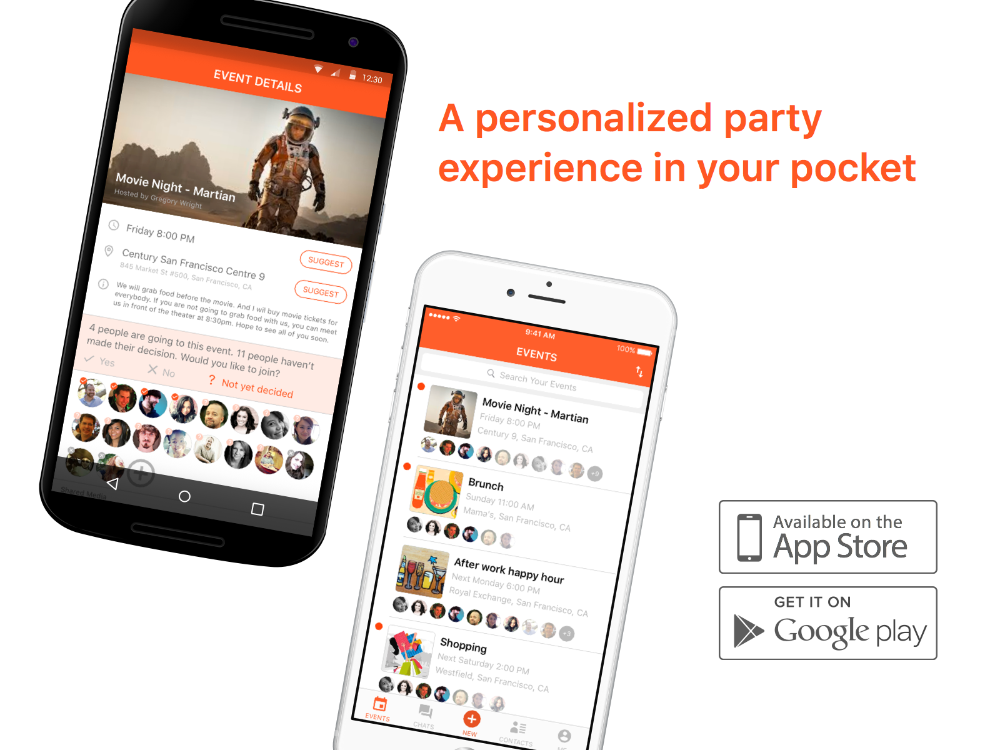
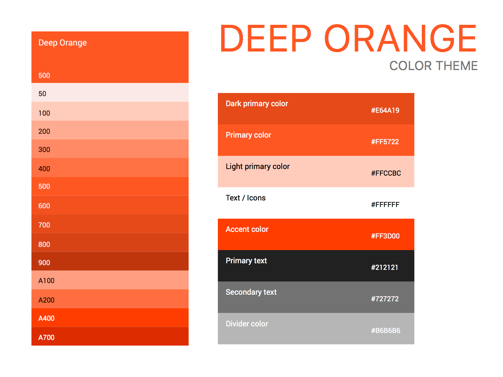

Party Assistant
Party Assistant is a mobile app that helps party hosts organize events effortlessly and engage guests before, during and after the events.
My Role: End-to-end Product Designer
Tools used: Sketch, Marvel App

Introduction
I got this design challenge on Friday afternoon. Over the following 48 hours, I researched the problem, interviewed target users, defined personas, sent out a quick survey, got feedback from a paper prototype and came up with high fidelity visual design mockups that demonstrate a solution to enhance party experiences for both hosts and guests.
The challenge was:
How do you make ad hoc event coordination as convenient and comfortable as your daily routine? Detail a digital service that provides individual assistance for attendees of a group social event such as a night out for dinner and a movie.
In this page, I would like to share my design process. For your convenience I have provided a timeline for reference.
You can navigate this page by using the grey nav bar. Both of the paper prototype and high fidelity prototype I made with
Marvel can be installed on your mobile devices. (Follow this
instruction to install on your iOS devices.) They are both embeded in this page.
Prototypes links for mobile:
Paper prototype:
http://marvelapp.com/e1e0a3
High fidelity prototype:
http://marvelapp.com/3aab76g
User Research Part A - user interview & personas
The project was kicked off by two sessions of 20-minutes semi-structured interviews with our target users. Talking with end users is always the best way to gain first-hand user information and an understanding of users’ pain points.
I asked my interviewees Philip and Diana about their experience of hosting parties, as well as their experience of joining parties hosted by others.
Common applications like Facebook Events, Google Events, Eventbrite, and Meetup, are serving events that have a larger number of participants. Both Philip and Diana expressed their frustration regarding hosting or joining an ad hoc or spontaneous party with a smaller group, such as a night out for dinner or movie.
I’ve created these personas based on my conversations with Philip and Diana.
User Research Part B - user survey & results
I sent out a quick survey via Survey Monkey on Friday night. This survey contains ten quick questions. So far I’ve received 11 total responses. The question summaries are shown on the below image.
Insights from the survey results:
• People use emails, text messages and instant chatting apps to coordinate casual events.
• Most people join more events than hosting.
• When someone responds “Maybe” going to a party/event, they usually means “Not Going”.
• Seeing who else are going to the event will determine if someone will attend or not.
• 24h and 2h ahead of time reminders are helpful. Particularly for spontaneous party goers.
• Major tasks to initiate a party/event: invite friends, decide a location, decide a time.
• Major tasks before a party/event begins: confirm participation, lookup directions.
• Major tasks during a party/event: take pictures.
• Major tasks after a party/event: share pictures, share contact information.
Ideation
Sketching the key screens
Paper prototype & feedback
The prototype below is interactive. Please play with it.You can also open this paper prototype in a new browser tab: http://marvelapp.com/e1e0a3
Skipping wireframing
Since I created a detailed paper prototype and also due to the time constraint, I decided to skip the digital wireframing process. Jumping from paper drawings to high fidelity mockups saves me some time to work on final visual and interaction deliveries.
I use Sketch as my visual design tool, linked to Marval App prototyping tool with the Marvel-Sketch plugin. I can easily update or upload pages to my prototype from Sketch and see results real-time. This design tools combination expedited my process dramatically.
High fidelity mockups

Starting from a branding color, I picked Deep Orange from Google’s color palette. I chose orange because it radiates warmth and happiness, which fits into our party theme.
High fidelity interactive prototype & usability testing
If you are interacting with the prototype on the left, please try to accomplish some of the following tasks:
As a host:
• Create an event - Brunch
• Invite friends or participants from previous events
• Talk to Diana and share the event “Brunch” with her
• View and edit event details of Brunch
• Join the conversation of Brunch
As a guest:
• Join the conversation of the event - Movie Night
• Suggest a time for Movie Night
• Respond if you are going or not
• View event details of Movie Night, check out who’s going
As any user:
• View contacts
• View shared events with Diana
• Invite Diana to an event
• View your own profile
Open this high fidelity prototype in a new browser tab:
http://marvelapp.com/3aab76g
Marketing page